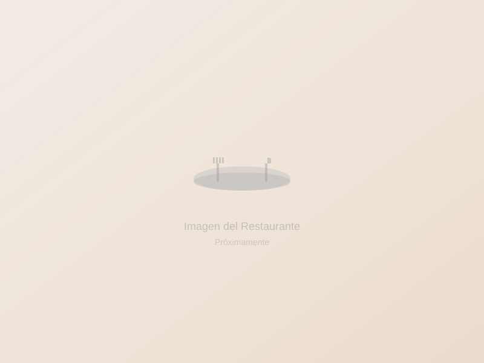

Cuchuco de Maíz con Costilla
Sopa espesa de maíz partido con costilla de cerdo, papa, arveja y habas. El plato de sopa más representativo de Cómbita, ideal para el clima frío del páramo.
Descubre la variedad gastronómica que nuestros restaurantes locales ofrecen
Muchos restaurantes conservan las recetas
ancestrales boyacenses, preparadas con productos
frescos de la región.
Varios establecimientos se abastecen
de las huertas locales, ofreciendo ingredientes
frescos y de temporada.
Encontrarás lugares donde la comida
se prepara con dedicación, manteniendo
ese toque hogareño especial.
Algunos de los platos tradicionales que podrás degustar en Cómbita
Sopa espesa de maíz partido con costilla de cerdo, papa, arveja y habas. El plato de sopa más representativo de Cómbita, ideal para el clima frío del páramo.
El plato seco insignia del municipio. Variedad de carnes asadas y fritas acompañadas de papa criolla, arepa, yuca y guacamole. Un festín para compartir en familia.
Caldo tradicional boyacense con leche, huevo pochado, cebolla larga y cilantro. Se acompaña con calado (tostada) y queso campesino.
Caldos reconfortantes preparados con papa, costilla, pata de res u otras carnes. Perfectos para comenzar el día con energía en el frío de la montaña.
Arepas de maíz amarillo asadas al carbón o en estufa de leña, servidas calientes con mantequilla y queso campesino fresco.
Masa dulce de maíz tierno envuelta en hojas de mazorca y cocida al vapor. Una delicia tradicional del campo boyacense.
Cuajada fresca de leche de vaca bañada en melao de panela caliente. El contraste entre lo salado del queso y lo dulce del melao es el sabor más auténtico de Cómbita.
Cuajada fresca acompañada de dulce casero de moras de la región. Las moras silvestres del páramo le dan un sabor intenso y único a este postre campesino.
Bebida ancestral de maíz fermentado, herencia directa de la cultura muisca. Se prepara artesanalmente y es parte esencial de las fiestas y celebraciones combitenses.
Jugos naturales de curuba, mora, arándanos y fresas cultivadas en las tierras fértiles de Cómbita. Frutas frescas del páramo boyacense, llenas de sabor y vitaminas.
Una tradición que se mantiene viva
Algunos restaurantes en Cómbita tienen la fortuna de abastecerse directamente de huertas locales, ofreciendo productos frescos y de temporada. Esta práctica, aunque no universal, representa una hermosa tradición que conecta la mesa con el campo, preservando las técnicas ancestrales de cultivo y garantizando sabores auténticos en cada plato.
Directorio de restaurantes y lugares gastronómicos recomendados

Cómbita CentroHorarios: La mayoría de restaurantes en Cómbita abren temprano (6:00-7:00 AM) y cierran al atardecer (6:00-8:00 PM). Los fines de semana suelen tener mayor afluencia.
Reservas: Para grupos grandes o fechas especiales, se recomienda contactar directamente con el restaurante vía WhatsApp o llamada.
Métodos de pago: El efectivo es el método más común. Algunos establecimientos aceptan transferencias bancarias y pocas tarjetas de crédito.
Recomendación especial: No dejes de probar el piquete combitense, el cuchuco de maíz con costilla y la cuajada con melao. Acompaña con una chicha o un jugo natural de curuba.
Nota: Los precios y disponibilidad de platos pueden variar según temporada y establecimiento. Consulta directamente con cada restaurante.